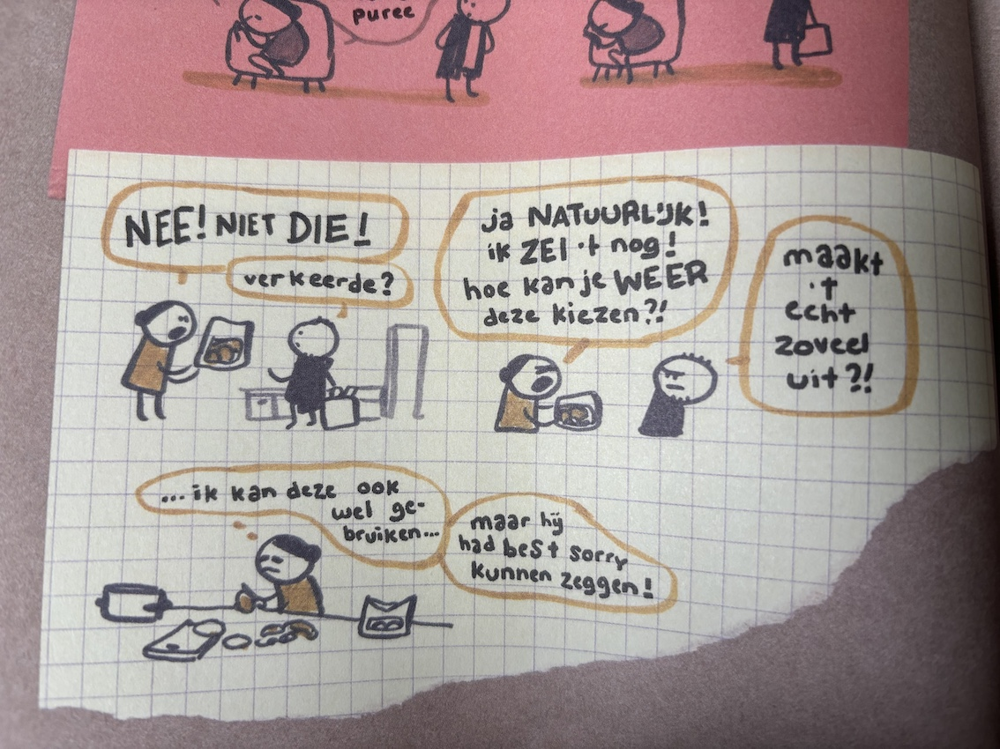

<html lang="en"></html>

</html>

<head>
    <meta charset="UTF-8">
    <meta name="viewport" content="width=device-width, initial-scale=1.0">
    <title>Portfolio Jamie Kramer</title>
    <link rel="stylesheet" href="../css/style.css">
    <link rel="preconnect" href="https://fonts.googleapis.com">
    <link rel="preconnect" href="https://fonts.gstatic.com" crossorigin>
    <link
        href="https://fonts.googleapis.com/css2?family=Pixelify+Sans:wght@400..700&family=Reddit+Sans+Condensed:wght@200..900&display=swap"
        rel="stylesheet">


    <style>
        * {
            font-family: "Reddit Sans Condensed", sans-serif;

            margin: 0;
            padding: 0;
            box-sizing: border-box;
        }

        p {
            font-size: 20px;
        }

        body {
            background-color: #232323;

        }

        section {
            padding-left: 300px;
        }

        nav,
        a {
            border: none;
            margin: 0;
            padding: none;
        }


        nav {
            background-color: #3F3F3F;
            height: 75px;
            display: flex;
            justify-content: space-between;
            width: 100%;
            align-items: center;

        }
        .arrow2{
            display: flex;
            position: absolute;
            justify-content: flex-start;
            width: 6%;
            margin: 0px 20px;
            top: 17px;
        }
    </style>
</head>

<body>
    <nav>
        <a href="../html/onderzoek.html" >
            
            
        </a>
    </nav>

    <section>
        <div style="width: 100%; height: 100%; position: relative; background: #232323">
            <div style="width: 805px; height: 110px; left: 28px; top: 29px; position: absolute; color: white; font-size: 36px; font-family: Avenir Next Condensed; font-weight: 700; word-wrap: break-word">ONDERZOEK - DESK RESEARCH - BURN-OUT DAGBOEK </div>
            <div style="width: 543px; height: 98px; left: 28px; top: 75px; position: absolute; color: white; font-size: 16px; font-family: Avenir Next Condensed; font-weight: 400; word-wrap: break-word">Ik heb het boek ‘Burn-out dagboek’ van Maaike Hartjes gebruikt als bron om dieper in te gaan op hoe een persoon die een burn-out heeft zich voelt. Nu is Maaike geen student, maar ik kan wel veel elementen gebruiken aangezien veel burn-out klachten overeenkomen ook al heeft Maaike niet de juiste leeftijdscategorie. </div>
            <div style="width: 499px; height: 211px; left: 37px; top: 701px; position: absolute; color: white; font-size: 16px; font-family: Avenir Next Condensed; font-weight: 400; line-height: 20px; word-wrap: break-word">Een interessant aspect waar ik nog niet echt over had nagedacht was het effect van de burn-out op je directe omgeving. In deze illustratie laat Maaike zien hoe een klein ding haar heel erg kan laten uitbarsten in woede, woede naar een persoon die het alleen maar goed probeert te doen. Burn-out kan ervoor zorgen dat je om de kleinste dingen van slag kan raken. Dit kan best vervelend over komen op je naasten, zeker als zij niet begrijpen waarom je zo reageert of waar je door heen gaat. Dit kwam ook uit mijn enquête: er heerste nogal veel onbegrip en irritatie op momenten dat zij niet wisten dat de persoon in hun omgeving een burn-out had en zo reageerde. </div>
            <div style="width: 430px; height: 134px; left: 680px; top: 316px; position: absolute; color: white; font-size: 16px; font-family: Avenir Next Condensed; font-weight: 400; word-wrap: break-word">Maaike illustreert hier goed hoe het is om midden in die burn-out te zitten. Ik denk dat het belangrijk is om te laten zien dat niemand vrijwillig zich zo voelt, en dat het ook geen pretje is om een burn-out te hebben. Ik vind het ook mooi hoe Maaike laat zien dat je zelf bewuster raakt van dat je een probleem hebt, en dat dat probleem nog niet is opgelost en dat je niet altijd op dat moment een oplossing er voor hebt. Het is een heel proces.  </div>
            <div style="width: 454px; height: 153px; left: 680px; top: 698px; position: absolute"><span style="color: white; font-size: 16px; font-family: Avenir Next Condensed; font-weight: 400; word-wrap: break-word">Maaike laat zien in haar boek dat ze over het algemeen hele fijne en positieve reacties krijgt op haar burn-out, maar toch zijn er een aantal minder fijne interacties geweest zoals hierboven op de plaatjes te zien. Deze reacties van mensen lijken te komen uit toch een stukje onbegrip of dat iemand denkt het beste met iemand voort te hebben zonder dat dit misschien klopt. Dat laatste heeft met </span><span style="color: white; font-size: 16px; font-family: Avenir Next Condensed; font-weight: 700; word-wrap: break-word">aannames</span><span style="color: white; font-size: 16px; font-family: Avenir Next Condensed; font-weight: 400; word-wrap: break-word"> te maken, wat een interessant uitgangspunt zou kunnen zijn om mee verder te gaan.</span></div>
            
            <div style="width: 202px; height: 21px; left: 28px; top: 186px; position: absolute; color: white; font-size: 16px; font-family: Avenir Next Condensed; font-weight: 700; word-wrap: break-word">Typische burn-out gevoelens</div>
            <div style="width: 202px; height: 21px; left: 37px; top: 534px; position: absolute; color: white; font-size: 16px; font-family: Avenir Next Condensed; font-weight: 700; word-wrap: break-word">Invloed op omgeving</div>
            <div style="width: 298px; height: 30px; left: 682px; top: 93px; position: absolute; color: white; font-size: 16px; font-family: Avenir Next Condensed; font-weight: 700; word-wrap: break-word">Waar je doorheen gaat tijdens een burn-out</div>
            <div style="width: 202px; height: 21px; left: 680px; top: 489px; position: absolute; color: white; font-size: 16px; font-family: Avenir Next Condensed; font-weight: 700; word-wrap: break-word">Reacties</div>
            
            <div style="width: 335px; height: 34px; left: 792px; top: 32px; position: absolute"><span style="color: white; font-size: 14px; font-family: Avenir Next Condensed; font-weight: 275; word-wrap: break-word">Bron: Hartjes, M. (2021).</span><span style="color: white; font-size: 14px; font-family: Avenir Next Condensed; font-style: italic; font-weight: 275; word-wrap: break-word"> Burn-out dagboek </span><span style="color: white; font-size: 14px; font-family: Avenir Next Condensed; font-weight: 275; word-wrap: break-word">(2e herziene druk). Amsterdam: Nijgh & Van Ditmar</span></div>
            
            
            
            
            
            
            
            
            
            
        </div>


        <div style="width: 100%; height: 100%; position: relative; background: #232323">
            
            <div style="width: 945px; height: 110px; left: 26px; top: 106px; position: absolute; color: white; font-size: 36px; font-family: Avenir Next Condensed; font-weight: 700; word-wrap: break-word">ONDERZOEK - DESK RESEARCH - DOCUMENTAIRE BRANDSTOF </div>
            <div style="width: 858px; height: 75px; left: 31px; top: 155px; position: absolute; color: white; font-size: 20px; font-family: Avenir Next Condensed; font-weight: 400; word-wrap: break-word">In deze documentaire zijn jongeren aan het woord over hun ervaring met een burn-out op jonge leeftijd. Ik heb een aantal uitspraken verzameld uit deze docu die ik interessant vond of me aanspraken</div>

            
            


            <div style="width: 945px; height: 110px; left: 26px; top: 1059px; position: absolute; color: white; font-size: 36px; font-family: Avenir Next Condensed; font-weight: 700; word-wrap: break-word">ONDERZOEK - DESK RESEARCH - TEKSTUELE BRONNEN</div>
            <div style="width: 518px; height: 49px; left: 107px; top: 1131px; position: absolute; color: white; font-size: 25px; font-family: Avenir Next Condensed; font-weight: 700; word-wrap: break-word">CNBC: Burnout is on the rise worldwide - and Gen Z, young millenials and women are the most stressed. </div>
            <div style="width: 518px; height: 49px; left: 106px; top: 1458px; position: absolute; color: white; font-size: 25px; font-family: Avenir Next Condensed; font-weight: 700; word-wrap: break-word">TNO-Onderzoek naar burn-outklachten onder jongeren </div>
            <div style="width: 797px; height: 194px; left: 106px; top: 1229px; position: absolute"><span style="color: white; font-size: 20px; font-family: Avenir Next Condensed; font-weight: 400; word-wrap: break-word">Het artikel van CNBC bespreekt de toename van burn-out, vooral bij Gen Z, millennials en vrouwen. Jongeren ervaren druk om te presteren, naast financiële onzekerheid en stress op het werk. Vrouwen worden vaker getroffen door burn-out door de combinatie van werk, zorg en maatschappelijke verwachtingen. De constante stroom van informatie via sociale media verhoogt het gevoel van uitputting, wat kan leiden tot mentale gezondheidsproblemen zoals angst en depressie.<br/></span><span style="color: white; font-size: 20px; font-family: Avenir Next Condensed; font-weight: 275; word-wrap: break-word">Smith, M. (2023, 14 maart). Burnout is on the rise worldwide—and Gen Z, young millennials and women are the most stressed. CNBC. https://www.cnbc.com/2023/03/14/burnout-is-on-the-rise-gen-z-millennials-and-women-are-the-most-stressed.html</span></div>
            <div style="width: 791px; height: 194px; left: 106px; top: 1527px; position: absolute"><span style="color: white; font-size: 20px; font-family: Avenir Next Condensed; font-weight: 400; word-wrap: break-word">TNO heeft een groot onderzoek gedaan naar burn-outklachten onder jongeren. In het artikel wordt kort samengevat wat er in het onderzoek naar boven is gekomen. Hieruit blijkt onder andere dat het aantal jonge vrouwen met klachten enorm toeneemt. Ook hebben ze kwalitatief onderzoek gedaan naar de redenen. Deze worden allemaal genoemd in een rapport. Deze bron is dus vrij feitelijk. In hun onderzoeksrapport stonden een aantal nuttige infographics/samenvattingen van hun onderzoek waar ik informatie uit kan halen, deze heb ik hieronder neergezet.<br/></span><span style="color: white; font-size: 20px; font-family: Avenir Next Condensed; font-weight: 275; word-wrap: break-word">TNO-onderzoek: Burn-outklachten onder jongeren een groeiend probleem. (z.d.). tno.nl/nl. https://www.tno.nl/nl/newsroom/2023/09/burn-outklachten-jongeren-onderzoek-2022/</span></div>
            
            
            
            <div style="width: 328px; height: 61px; left: 93px; top: 1986px; position: absolute; color: white; font-size: 20px; font-family: Avenir Next Condensed; font-weight: 400; word-wrap: break-word">Hier zie je dat de ernst van burn-outklachten onder jongeren is gestegen </div>
            <div style="width: 328px; height: 107px; left: 91px; top: 2327px; position: absolute; color: white; font-size: 20px; font-family: Avenir Next Condensed; font-weight: 400; word-wrap: break-word">Sociale media, verwachtingen van familie en vrienden, druk om altijd vrolijk en leuk te moeten zijn spelen de grootste rol als het gaat om sociale druk als oorzaak van stress.</div>
            <div style="width: 328px; height: 84px; left: 439px; top: 1986px; position: absolute; color: white; font-size: 20px; font-family: Avenir Next Condensed; font-weight: 400; word-wrap: break-word">In deze grafiek wordt duidelijk hoe opleiding een rol speelt. Hoog opgeleiden hebben over het algemeen meer burn-outklachten.</div>
            <div style="width: 328px; height: 84px; left: 436px; top: 2327px; position: absolute; color: white; font-size: 20px; font-family: Avenir Next Condensed; font-weight: 400; word-wrap: break-word">Jongeren zijn het meest onzeker over hun carrièreperspectief, maatschappelijke onzekerheid en financiële onzekerheid.</div>
            <div style="width: 328px; height: 84px; left: 783px; top: 1981px; position: absolute; color: white; font-size: 20px; font-family: Avenir Next Condensed; font-weight: 400; word-wrap: break-word">In deze grafiek zie je dat vrouwen over het algemeen meer burn-outklachten hebben dan mannen.</div>
            <div style="width: 328px; height: 148px; left: 89px; top: 2690px; position: absolute; color: white; font-size: 20px; font-family: Avenir Next Condensed; font-weight: 400; word-wrap: break-word">Bronnen van stress die jongeren ervaren in het dagelijks leven: werk en carrière-stress, financiële druk en woononzekerheid, zingeving en persoonlijke ontwikkeling, sociale druk en maatschappelijke factoren.</div>
            
            
            
            
            <div style="width: 842px; height: 34px; left: 89px; top: 2863px; position: absolute; color: white; font-size: 14px; font-family: Avenir Next Condensed; font-weight: 275; word-wrap: break-word">Van Veen, M., Bruel, D., Bouwens, L., Held, N., Soeter, M., & TNO. (2023). BURN-OUTKLACHTEN ONDER JONGE WERKNEMERS. TNO. https://monitorarbeid.tno.nl/monitor-arbeid/wp-content/uploads/sites/16/2023/10/TNO-2023-burnout.pdf</div>


            <div style="width: 945px; height: 110px; left: 28px; top: 3001px; position: absolute; color: white; font-size: 36px; font-family: Avenir Next Condensed; font-weight: 700; word-wrap: break-word">ONDERZOEK - DESK RESEARCH - SOCIAL MEDIA ONDERZOEK</div>
            <div style="width: 482px; height: 513px; left: 355px; top: 3063px; position: absolute; color: white; font-size: 16px; font-family: Avenir Next Condensed; font-weight: 400; word-wrap: break-word">Ik heb social media onderzoek gedaan om de kant van gen X te bekijken. Ik heb Twitter hiervoor gekozen omdat dit een plek is waar men vaak hun volledige mening laat horen zonder rem. Dit komt omdat hier geen directe gevolgen aanhangen. <br/><br/>De tweets die je ziet zijn reacties op nieuwsartikelen die zeggen dat burn-out onder jongeren toeneemt en vergelijkbare artikelen. Wat ik merkte is dat bijna alle reacties hieronder negatief waren. Nu gaat het natuurlijk wel om reacties onder een nieuwsartikel op social media, hier reageren vaak dezelfde mensen onder met dezelfde meningen, maar toch vond ik het schrikbarend. <br/><br/>Wat ook opvalt is dat het lijkt alsof men de situatie van nu gaat vergelijken met hoe het vroeger voor hen was. Alsof het even moeilijk voor de jongeren van nu moet zijn als het voor hen was. Hierbij is het goed om te zeggen dat ik nu niks kan zeggen over hoe het voor hen was want hier heb ik geen onderzoek naar gedaan en vind ik nu ook niet relevant. <br/><br/></div>
            


            

           


            
            
            
           
        </div>


        

    </section>

    <section>
        
    </section>

</body>

</html>
